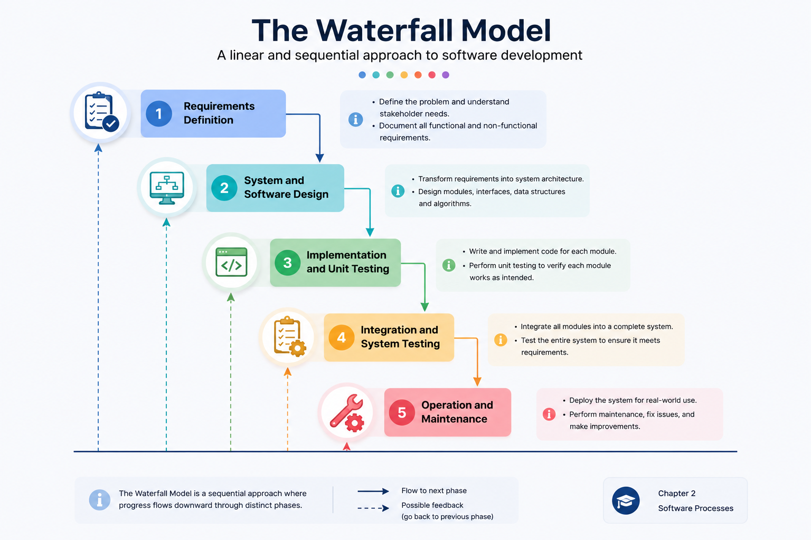

Waterfall Model
Waterfall organizes development into identified sequential phases with clear milestones and documentation.
Explain the Waterfall sequence, its phase-completion logic, its strengths and limitation, and when a plan-driven model is an appropriate choice.
Waterfall is a staged commitment
Each major phase produces knowledge and deliverables that support the next phase. The uploaded diagram below is the primary visual for this model: it shows the downward progression, the purpose of each phase, and the possibility of feedback to earlier stages.

Read the diagram from top to bottom: commitment increases as the project moves downstream. Dashed feedback paths show that returning is possible, but later change usually costs more.
Three hooks to remember
Clear planning, milestones, documentation and coordination make progress visible and can help large or distributed engineering efforts stay synchronized.
Once downstream phases are underway, changing an earlier assumption can force expensive rework across design, implementation and testing.
Waterfall is most suitable when requirements are well understood, major changes are unlikely, and the organization values staged approvals and predictable documentation.
Government reporting system
If mandatory forms, regulations and interfaces are stable, a plan-driven sequence can simplify approvals, documentation and coordination. The same model becomes less attractive if policy changes every few weeks.
Waterfall trades adaptability for staged commitment, visibility and coordination.
The section below is added clarification to make the concept easier to understand and revise.
Connect it to engineering practice
Ask: “How stable are the requirements, and how costly would late change be?” Stable requirements strengthen the case for Waterfall.
Be able to list the major phases, explain why the model is sequential, identify its main strength and drawback, and justify whether it fits a short scenario.